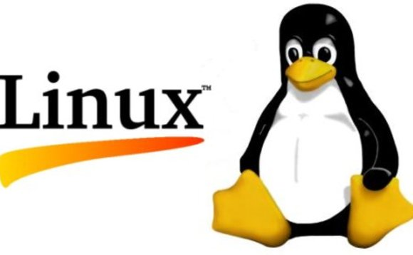

Upstart
Upstart es un evento basado en el reemplazo del daemon /sbin/init el cual maneja el inicio de tareas y servicios durante el booting(booteo).Deteniendolas durante el apagado y supervisandolas mientras el sistema esta corriendo.
Fue desarrollado originalmente para la distro Ubuntu.Pero se intenta que sea adecuado para el despliegue en todas las distros Linux como un remplazo para System-V init.
HIGH LIGHTS
- Tareas y servicios son iniciados y detenidos por eventos.
-Eventos generados como tareas y los servicios son iniciados y detenidos.
-Los eventos talvez sean recibidos desde algun otro proceso en el sistema.
-Supervisión y reaparición de daemons que separan de sus procesos padre.
-Comunicación con el init daemos sobre D-Bus
-Servicios de usuario, que pueden iniciar y detener ellos mismos.
HIGH LIGHTS SCHEDULED
-Eventos generados en intervalos de tiempo o tiempos programados.
-Eventos generados como archivos o directorios son cambiados(in progress).
ALGUNOS USUARIOS USUARIOS
- Ubuntu 6.10
- Fedora 9
- Google Chrome
- Chromium
- Nokia
- Debian(como opción).